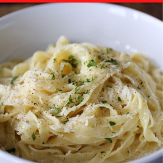

← All recipes
Homemade Fettuccine Alfredo: Italian Cheese & Butter Noodles

Servings: 4 · Prep: 5 mins · Cook: 10 mins
Ingredients
- 1/2 cup Unsalted Butter room temperature
- 4 oz Parmigiano-Reggiano grated
- Kosher Salt & Pepper
- 1 lb Fresh Tagliatelle or Fettuccine Pasta or 350g dried
Directions
- In a large heatproof bowl, combine butter and cheese.
- In a medium pot of salted boiling water, cook pasta until al dente. Using tongs, a strainer, or a spider, transfer pasta to bowl with cheese and butter.
- Add 1/2 cup hot pasta-cooking water, then, using tongs, toss repeatedly until butter is melted and a creamy, emulsified sauce forms. Season with salt and pepper.
- Sprinkle with additional parmesan cheese and serve immediately.
Original source: dobbernationloves.com